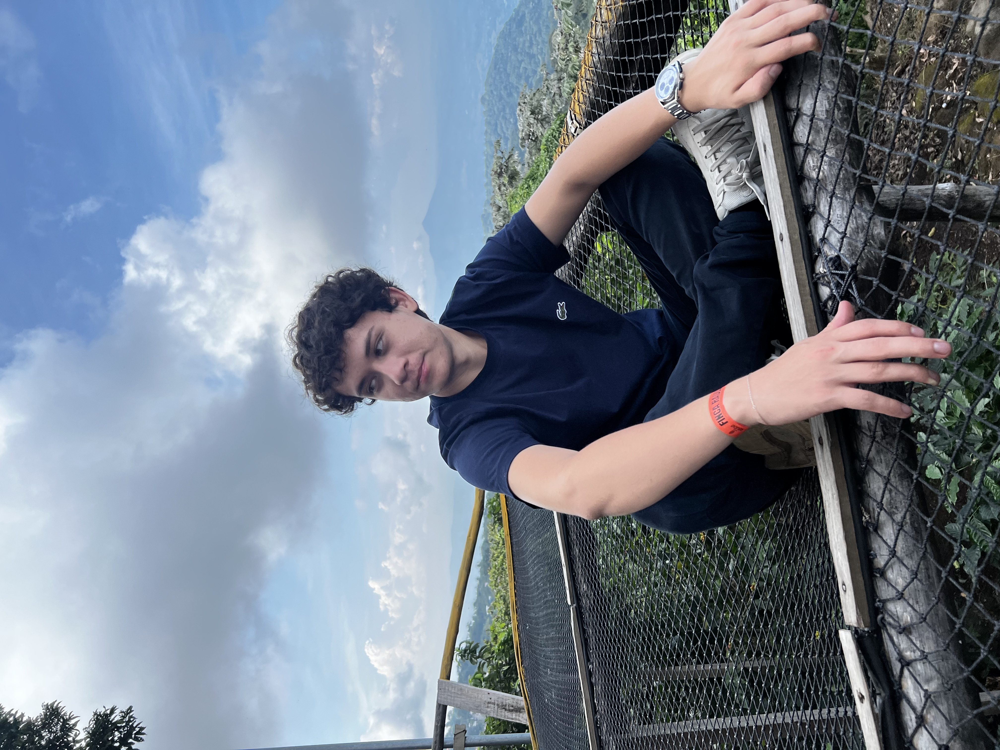

Descripción
Mi nombre es Marco Mazzini, tengo 21 años. Mi fecha de cumpleaños es el 1 de agosto. Soy estudiante de la ESEN, de la carrera de Ingeniería de Software y Negocios Digitales. Me gusta mucho jugar videojuegos, escuchar música, aprender sobre tecnología y programación e ir al gimnasio en mis tiempos libres. Tengo 3 gatos y un perico, a los cuales quiero mucho. Además, también me gusta jugar fútbol con mis amigos y salir con ellos a otros lugares.
